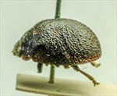
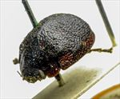
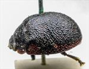
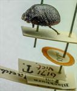
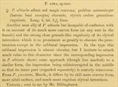

Click on images to enlarge
{kind=link}

Fig. 1. Paropsis lima type specimen, lateral view
{kind=link}

Fig. 2. Paropsis lima type specimen, oblique view
{kind=link}

Fig. 3. Paropsis lima type specimen, lateral view
{kind=link}

Fig. 4. Paropsis lima type specimen and labels
{kind=link}

Fig. 5. Paropsis lima, description
Name
Paropsis lima Blackburn, 1896
Corresponds to
No known correspondence with any of the species codes, but probably close to Ta21.
Diagnosis and Notes
Blackburn (1896) deals with T. lima as part of his 'subgroup ii' (i.e., those species without "strongly marked characters", whose greatest height is not or scarcely in front of the middle of the elytral margin and whose elytra are depressed under the humeral callus). Within that group, he characterises it as:
A. Inner edge of humeral callus distinctly nearer to lateral margin of elytra than to suture;
BB. Sides of prothorax not at all explanate;
C. Elytra not having a well defined transverse wheal-like ridge;
DD. Form less wide [not nearly circular]; elytra not wider than long;
EE. Prothorax widening from apex almost to to base; base much wider than front margin;
F. Puncturation of elytra not particularly fine;
GG. Elytral verrucae not as in T. tatei [i.e., not large, barely elevated, isolated, black or shiny];
HH. Surface of elytra (disregarding the verrucae) closely granulate-rugulose even at the base.
Likely a species I have not seen - probably close to Ta21. The similarity to alticola seems very close - the differences from it that Blackburn lists are very variable in some species.
Type specimen
Location: BMNH
Label data: /“Type” (red-bordered circle)/ “6171 Vict. T.”/ “Blackburn coll. 1910-236.”/ “Paropsis lima, Blackb.”/.
Female; Size: 8.55 (L) x 6.3 (W) x 3.9 (H) mm; HCE/BL ~ 20.75% (estimate from measurement of lateral view of specimen photo).
A rather dark Trachymela with similar depressed region along part of elytral margin as species such as Ta21 and Ta23, but with the interstices much more granulose over a larger area than in that species.
Original description
Translation of original description (Figure 6) by ChatGPT, 03/2026:
♀. Allied to P. alticola, but more convex; legs and antennae (except the base of the latter) dark; elytra closely granulose-rugulose.
Length 4 lines [~8.5 mm]; width 2 9/10 lines [~6.15 mm].
References
Blackburn, T. 1896, "Revision of the genus Paropsis. Part I", Proceedings of the Linnean Society of New South Wales, vol. 21, no. 4, 637-693 (page 675).
Copyright © 2026. All rights reserved.